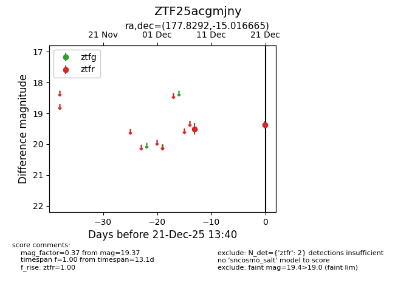
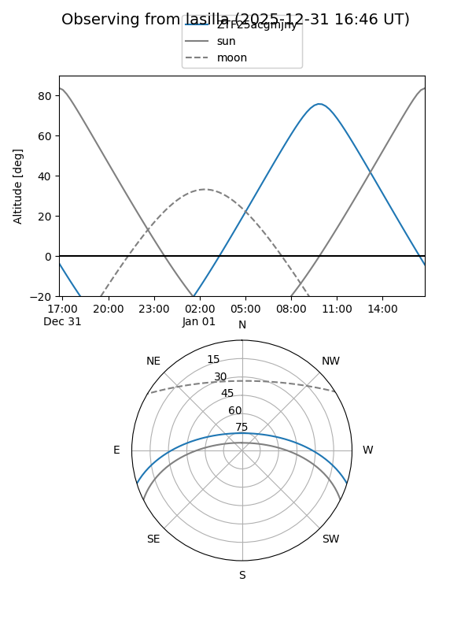
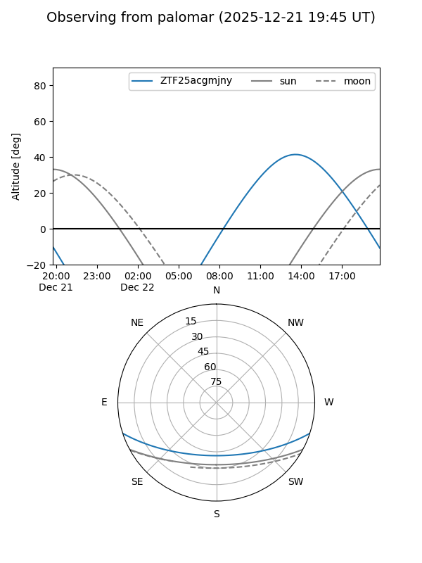

ZTF25acgmjny
Target ZTF25acgmjny at 2025-12-21 13:42
Aliases and brokers:
FINK: fink-portal.org/ZTF25acgmjny
Lasair: lasair-ztf.lsst.ac.uk/objects/ZTF25acgmjny
ALeRCE: alerce.online/object/ZTF25acgmjny
alt names
ZTF25acgmjny (ztf,fink_ztf)
Coordinates:
equatorial (ra, dec) = 177.8292,-15.01667
equatorial (HMS+DMS) = 11:51:19.01,-15:01:00.00
galactic (l, b) = (282.0324,+45.40134)
Flags:
Photometry:
last ztfr=19.37
2 ztfr detections
Lightcurve

Visibility


Additional plots